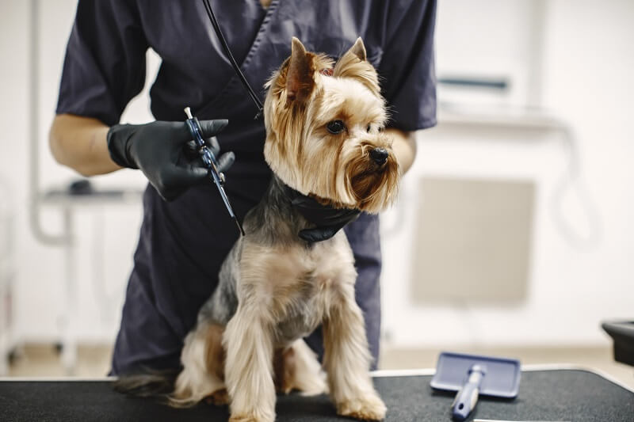
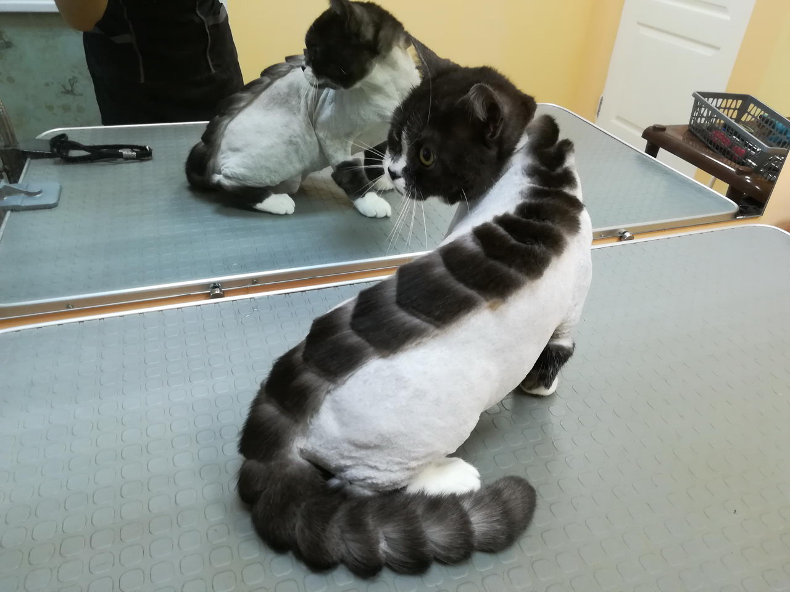
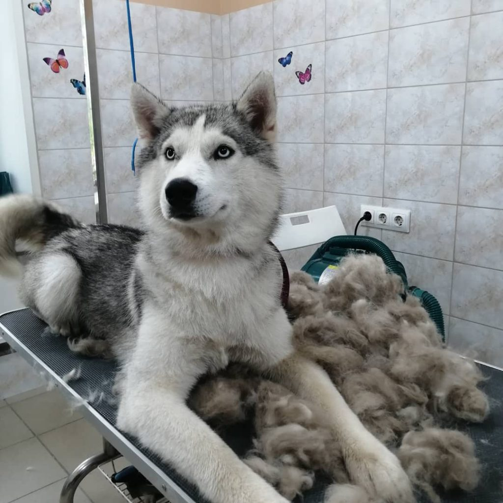

Что такое грумиинг?
Груминг относится к комплексу процедур, поддерживающих здоровье собак и кошек
Стрижка - одна из составляющих груминга, однако, не всем животным она показана.
Профессиональный грумер не будет стричь собаку, у которой особое строение шерстяного покрова, состоящего из подшерстка и волос остевого типа.
Груминг, как комплекс гигиенических и эстетических процедур по уходу за животными, включает следующие составляющие:
Уход за шерстью – расчесывание шерсти животного с применением специальных инструментов для короткошерстных и длинношерстных собак и кошек, удаление колтунов;
Мытье – гигиеническая водная процедура, для которой подбирают гипоаллергенные шампуни и кондиционеры. Процедуру совмещают с массажем;
Стрижка: придание шерсти животного эстетически привлекательного вида. Грумер подбирает индивидуальную стрижку для каждой породы;
Уход за полостью рта включает чистку зубов, которая начинается с постепенного приучения собаки к процедуре. Применяют специальные зубные щетки, пасты и средства;
Уход за ушными раковинами: манипуляции, которые грумер проводит с применением ватных дисков и медицинских антисептических растворов;
Стрижка когтей: безболезненная процедура, осуществляемая по всем правилам при помощи когтерезов, ножниц и щипчиков;
Борьба с паразитами: избавление животного от блох, вшей и глистов, угрожающих здоровью и хорошему состоянию собаки.
Наши клиенты
  